Optagelsesprøve til de gymnasiale uddannelser
Tirsdag den 6. august 2024
Kl. 10.00-14.00
Du har i alt 4 timer til prøven. Du bestemmer selv, i hvilken rækkefølge du besvarer opgaverne, og hvor lang tid du bruger på opgaverne i hvert fag.
Det er ikke tilladt at bruge internettet som fagligt hjælpemiddel eller foretage søgninger på
internettet, fx ved hjælp af Google.
Det er ikke tilladt at kommunikere med omverdenen.
Det er tilladt at benytte alle øvrige hjælpemidler, fx lærebøger, formelsamlinger, lommeregner, ordbøger, grammatiske oversigter og noter. Disse hjælpemidler kan enten medbringes på computeren eller på papir. Skolen kan tillade, at ordbøger tilgås via internettet.
Din besvarelse skal afleveres i et samlet dokument. Når du er klar til at aflevere din besvarelse, skal du gøre følgende:
- Tryk på knappen ’Dan og gem pdf’ i menuen i venstre side.
- Navngiv din besvarelse ’Optagelsesprøve’ og gem dokumentet på din computer.
- Tjek din besvarelse igennem og kontroller, at den indeholder de svar på opgaverne, som du ønsker at aflevere. Ser det ud til, at der er fejl i besvarelsen (fx svar på enkelte opgaver, der ikke er med i besvarelsen), skal du kontakte en eksamensvagt.
- Aflever din besvarelse i Netprøver.
Optagelsesprøven er i udgangspunktet anonym for dem, som skal bedømme din besvarelse. Det er derfor vigtigt, at du ikke skriver dit navn noget sted i besvarelsen eller i titlen på dit dokument, som du afleverer i Netprøver.
Dansk
Prøven i dansk består af tre delprøver:
- Den første delprøve er en læsefærdighedsprøve, der består af to tekster. Til hver af de to tekster er udarbejdet 10 opgaver. Alle opgaver skal besvares.
- Den anden delprøve er en grammatisk færdighedsprøve, hvor udsagnsled (verballed) skal omskrives i tid.
- Den tredje delprøve er en skriftlig færdighedsprøve.
Du kan højst få 25 point i danskprøven:
| Opgave | Antal mulige point |
|---|---|
| Læsefærdighed | 12 point |
| Grammatisk færdighed | 6 point |
| Skriftlig færdighed | 7 point |
Dansk
Læsefærdighed - Tekst 1
Til teksten er udarbejdet 10 opgaver. Der er kun ét rigtigt svar til hver opgave.
For at opnå 12 point i den samlede læsefærdighedsprøve (tekst 1 og 2) skal mindst 18 af de i
alt 20 opgaver i prøven være korrekt besvaret.
Hun græder ikke
Af Naja Marie Aidt
Det er Anika der står på en støvet perron med sin dukke i en lyseblå lift af stof, foret med tynd, blåprikket plastic. Med den ene hånd holder hun fast i sin fars grå flannelsbukser. Med den anden svinger hun liften frem og tilbage. Imens stirrer hun på en lille pige, der sidder på sin mors hofte på den modsatte perron. Pigen har lagt armene om morens hals og trykker sin kind ind til hendes ansigt. Anika og faren har stået her et stykke tid, faren læser avis og svarer distræt, hver gang Anika spørger ham om noget. „Er det vores tog?“ Han nikker. „Er det?“ „Nej ...“ „Hvorfor læser du avis?“ „Mmm ...“
De tog en taxa til banegården, og Anika sad helt stille og så på chaufførens tykke, grå nakke. Der lugtede dårligt i bilen. Hendes far talte anderledes end han plejede, og lo mærkeligt når chaufføren sagde noget, der åbenbart var sjovt. Hun havde grædt meget da de skulle af sted. Spædbarnet gylpede ned ad morens ryg. Anika skreg da faren bar hende ud. De skal besøge farmor og farfar. Moren er for træt til at tage med. Anika synes ikke, at hun ser træt ud. Det er lillesøsteren der sover hele tiden. Faren klapper avisen sammen og smiler til hende: „Når vi kommer til færgen, ved du hvad så, så skal vi ha os en is.“
En høj, fremmed mand kommer smilende hen mod Anika og faren, og det er åbenbart en mand faren kender, for de hilser hjerteligt og højlydt på hinanden med overraskede udbrud og stiller begge to deres kufferter mellem benene for at trykke hinandens hænder. „Det her er min datter,“ siger faren og lægger en hånd på hendes hoved, „det er Anika.“ „Jamen altså,“ siger manden, „sidst jeg så hende Iå hun i barnevogn!“ „Tre år," siger faren, „hun er tre et halvt år nu, og vi har netop for en måned siden fået endnu en lille pige.“ Den fremmede løfter blikket fra Anika, ser på faren og klapper begejstret hans skulder. „Tillykke, gamle dreng, hvor det glæder mig! Og mor og barn har det godt?“ På dette tidspunkt i samtalen placerer Anika sin dukkelift mellem sine ben og sætter hænderne i siden. Hun står nu præcis som de to mænd. Hun ser lige op i den fremmede mands ansigt, og hun længes ikke mere efter at komme tilbage til sin mor i lejligheden med de gule gardiner og katten, der næsten altid ligger i en solstråle på køkkengulvet med halvt lukkede øjne. Hun har kopieret de to mænd ned til mindste detalje, hvad deres fysiske position angår, og hun ser igen over på pigen, der stadig klæber til sin solbrændte mor. Dumme, lille pige. Anika kan mærke liften mod sine bare ben. Hun laver en stor spytboble, som smatter ud så hun bliver våd om munden. Hun rækker tunge ad pigen. Hun føler sig høj og bred. Og det føles også lidt som dengang hun var i svømmehallen med sin mor, vandet var koldt, hun hvinede, men det var rart, og hun flytter nu på sin venstre fod, præcis som faren lige har gjort, og noget vidunderligt strømmer igennem hende, noget på én gang fløjlsagtigt blødt og mørkt, men alligevel meget stærkt oplyst. Hun: Et menneske. Hun kan næsten ikke stå stille mere, hun vil hoppe op og ned, hun vil løbe helt hen til skraldespanden i den anden ende af perronen, men da hun så skæver til sin far og manden, der siger noget med en dyb, brummende stemme, konstaterer hun at de begge står fuldstændig roligt, ligesom låst i deres store, bjørneagtige kroppe, så Anika bliver stående og gnider sig i stedet over hagen med tommel- og pegefinger, ligesom faren netop er i færd med at gøre. Da er det at den fremmede mand pludselig ser på hende. Han holder op med at tale midt i en sætning, hvorefter et smil breder sig på hans ansigt. Han sprutter og tager sig til munden. Faren følger forundret sin vens blik, og også han bryder ud i en umotiveret latter, da hans øjne glider over Anika og først standser ved hendes ben der skræver over liften og så ved hendes alvorlige ansigt. Anika gemmer sig bag sin far. Der er noget der brænder i hovedet og maven. Han bøjer sig ned og løfter hende op. Han forsøger at bringe sin stemme under kontrol. „Du skal ikke være ked af det.“ Han ser på sin ven. Mere latter. „Det er bare fordi det er så sjovt, at du står ligesom os. lkke?“ Nu dirrer farens stemme. „Det er da sjovt!“ De to mænd giver slip og griner højt. De kan næsten ikke holde op. Faren trækker med sin enorme hånd hendes kind ind mod sit ansigt. Anika græder hjerteskærende mens hun ser på pigen, der i det samme bliver sat ned på perronen af sin mor og straks løber væk og kravler op på en bænk. Anika græder højere. Latteren forstummer. „Jamen, lille skat, det er da ikke noget at græde over,“ siger faren. Så kører det store, brune tog ind mellem børnene med sydende, hvæsende lyde. Faren tager hurtigt afsked med sin ven og stiger op i toget, stadig med Anika på armen. Han sætter hende fra sig på sædet i kupeen. Han ryster smilende på hovedet. Hun kommer snøftende op på knæ og presser panden mod ruden. Hun betragter den lyseblå dukkelift, der står tilbage på perronen. Hun siger ikke et ord. Hun kan lugte farens pibetobak. Vinduet smager surt. Et lille, sort frø, der til forveksling ligner pupillen i farens ene øje, det der skeler en lille smule, når han ikke ved, hvad han skal sige, er nu plantet i hende. Hun kan mærke, hvordan det rumler i maven, men hun græder ikke. Toget sætter i gang. Marker og skove flyver forbi, fjerne og grønne. Hun græder ikke.
(Fra novellesamlingen Bavian, 2006)
1. Hvor foregår novellen?
x
x
x
x
2. Hvor gammel er Anika?
x
x
x
x
3. Hvem skal faren og Anika besøge?
x
x
x
x
4. Hvorfor græd Anika, da hun og faren skulle hjemmefra?
x
x
x
x
5. Farens opførsel kan bedst beskrives med ordene
x
x
x
x
6. Hvorfor synes Anika, at pigen på den modsatte perron er dum?
x
x
x
x
7. Hvad sker der med Anika, da hun placerer dukkeliften mellem benene?
x
x
x
x
8. Hvad føler Anika, da faren og hans ven griner af hende?
x
x
x
x
9. Man kan forstå det lille sorte frø, der er sået i Anika, som et symbol på
x
x
x
x
10. Temaet i novellen kan bedst beskrives med ordene
x
x
x
x
Læsefærdighed - Tekst 2
Til teksten er udarbejdet 10 opgaver. Der er kun ét rigtigt svar til hver opgave.
For at opnå 12 point i den samlede læsefærdighedsprøve (tekst 1 og 2) skal mindst 18 af de i
alt 20 opgaver i prøven være korrekt besvaret.
Du lever i en anti-romantisk tid: Tinder og SoMe går ud over kærligheden
(I uddrag)
Af Anne Ringgaard
Er du på Tinder, Instagram, Grinder, YouTube, Facebook eller en anden social platform? Får du likes, og bliver du matchet? Så er du en del af en (forening, gruppe, klan, kultur), som kendetegner den tid, vi lever i.
I tidens onlinekultur hungrer vi efter likes, og vi elsker at få matches. Vi iscenesætter os selv og vores liv for at blive elsket, siger filosof Anne-Marie Søndergaard Christensen:
»Vi lever i en gennemsyret (grim, højtidelig, uformel, visuel) tid. Vi præsenterer hele tiden os selv på billeder, og vi stræber efter, at andre ser os på den helt rigtige måde.«
»Behovet for at blive set bunder grundlæggende i et ønske om at blive (elsket, gammel, krammet, udfordret). Vi tror, at selviscenesættelse er afgørende for, at nogen kan elske os. Men det er en massiv misforståelse,« siger Anne-Marie Søndergaard Christensen, der er lektor i filosofi på Syddansk Universitets Institut for Kulturvidenskaber.
Anne-Marie Søndergaard Christensen var en af forskerne bag konferencen Love Etc., som blev afholdt på Syddansk Universitet i oktober 2019.
(I, Imellem, Over, På) konferencen præsenterede kulturforskere fra en række lande deres tolkninger af det moderne menneskes syn på kærlighed, som det kommer til udtryk i ungdomsfællesskaber, i ny skønlitteratur, i reality-TV og på film.
Dating-apps, sociale medier og forbrugersamfundet præger det (moderne, opofrende, svage, traditionelle) menneskes kærlighedsopfattelse, sagde flere af forskerne.
Ifølge Anne-Marie Søndergaard Christensen fører online-kulturen til den fatale fejlslutning, at man kan sikre sig kærlighed ved at fremstille sig selv på en bestemt måde, som man gerne vil ses af andre.
»Men ligegyldigt hvor meget tid man bruger på at gøre sig synlig og iscenesætte sig selv, kan man aldrig være sikker på, at man bliver set, og slet ikke at man bliver elsket,« siger hun.
Hvis man vil være sikker på at have kærlighed i sit liv, er det bedste, man kan gøre, at rette blikket udad mod (andre, dem, gamle, nye), i stedet for indad mod sig selv og sit eget image, argumenterer Anne-Marie Søndergaard Christensen:
»Man kan ikke styre andres blik, men man kan styre sit eget. Man kan sikre kærligheden ved at se andre, ikke kun på billeder, men tæt på – se dem ordentligt,« siger hun.
Nærhed, nysgerrighed og gensidig forståelse er en forudsætning for ægte kærlighed og for, at andre ser en, som den man virkelig er, på godt og ondt.
Online-kulturen, for eksempel dating-apps og sociale medier, spænder ben for tætte relationer og giver et forvrænget billede af, hvad det vil sige at blive elsket, mener Anne-Marie Søndergaard Christensen:
»I stedet for at bringe os tættere på andre mennesker, får dating-apps og sociale medier os længere væk fra hinanden, for det handler hele tiden om at positionere sig selv og redigere sit (CV, essay, selvbillede, træningsprogram),« siger hun.
På Tinder kan vi vælge og vrage potentielle partnere. Vi kan mødes med dem i virkeligheden, eller vi kan lade være. Ifølge den italienske sociolog Carolina Bandinelli har appen succes, fordi den får brugerne til at føle sig set.
»Mange af dem, jeg har talt med, fortæller, at de får et selvtillidsboost og føler sig attraktive, når de får et match,« sagde Carolina Bandinelli, da hun var til konferencen i Odense. »Tinder (advarer, forfører, frastøder, hjælper) brugerne, så de hele tiden må tilbage og tjekke. Man bliver tilfredsstillet, uden at man behøver mødes med nogen i virkeligheden,« sagde hun også.
Carolina Bandinelli har foretaget fokusgruppeinterview med britiske unge på Tinder, og hun har talt med folk i sin omgangskreds om deres brug af dating-appen.
Mange af dem, hun har talt med, mødes aldrig med de personer, de bliver parret med på Tinder. Følelsen af at blive matchet er tilfredsstillende nok i sig selv.
»En af de (dårligste, mærkeligste, nyeste, vigtigste) funktioner ved dating-apps som Tinder er, at de matcher mennesker. De folk, jeg har talt med, siger, at et match får dem til at føle sig mere attraktive, i hvert fald i nogle sekunder,« sagde Carolina Bandinelli.
På baggrund af sine interview har Carolina Bandinelli opstillet en hypotese om, at Tinder har succes. Ikke fordi appen hjælper folk med at mødes, men fordi den giver tilfredsstillelse, uden at man behøver at mødes.
Mange mennesker opfatter for tiden fysisk kærlighed som besværligt, så de nøjes med drømmen om den romance, dating-appen stiller i udsigt, argumenterer hun.
Hypotesen begrunder Carolina Bandinelli med en sociologisk idé om, at (forældreskab, kærlighed, tryghed, venskab) i vor tid bliver set som risikofyldt: Romantik spiller ikke sammen med ambitioner om at præstere, opnå en god karriere og være selvstændig.
At matche på Tinder er risikofrit, men at mødes i virkeligheden er risikofyldt, argumenterer Carolina Bandinelli med henvisning til blandt andre den tyske sociolog Ulrich Beck.
Parforhold, kærlighed og lidenskabelig sex er ikke længere lystbetonet, men bliver opfattet som et krav – et imperativ – lyder Carolina Bandinellis tese: Det perfekte parforhold føles som et pres eller en præstation.
Når noget er påkrævet, som kærligheden er blevet, har man ikke lyst til det, argumenterer hun.
Tinder er derfor et hit, mener Carolina Bandinelli, fordi (appen, computeren, mobilen, radioen) giver folk en følelse af, at de bliver set og er attraktive, helt uden at de behøver bruge tid og energi på at mødes og se den anden.
»Min tese er, at dating-apps er succesfulde, ikke fordi de hjælper folk med at mødes, men fordi de tillader, at folk ikke mødes. Dating-apps virker altså ved, at de ikke virker. Det er på grund af dysfunktionen, at de er succesfulde,« argumenterer Carolina Bandinelli.
Grammatisk færdighed
Du skal følge anvisningen og besvare opgaven. Du kan højst få 6 point for din besvarelse.
Originaltekst:
Så kører det store, brune tog ind mellem børnene med sydende, hvæsende lyde. Faren tager hurtigt afsked med sin ven og stiger op i toget, stadig med Anika på armen. Han sætter hende fra sig på sædet i kupeen. Han ryster smilende på hovedet. Hun kommer snøftende op på knæ og presser panden mod ruden. Hun betragter den lyseblå dukkelift, der står tilbage på perronen. Hun siger ikke et ord. Hun kan lugte farens pibetobak. Vinduet smager surt. Et lille, sort frø, der til forveksling ligner pupillen i farens ene øje.....
Rediger versionen i boksen. Husk at understrege det ændrede udsagnsled som i eksemplet.
Du understreger ordet ved at markere det og dernæst trykke på 'U'.
Skriftlig færdighed
Du skal følge anvisningerne i boksen nedenfor og besvare opgaven. Din besvarelse bliver vurderet ud fra følgende kriterier:
-
sammenhæng
-
grammatik
-
retskrivning
-
tegnsætning
Du kan højst få 7 point for din besvarelse.
Skriv en fortsættelse af novellen Hun græder ikke. I fortsættelsen skal du fortælle, hvad der sker med dukkeliften. Du skal skrive ca. 200 ord.
Skriv din besvarelse i boksen herunder.
Engelsk
Prøven i engelsk består af fem delprøver: fire prøver i sprog og grammatik og en prøve i skriftlig fremstilling.
| Opgave | Antal mulige point |
|---|---|
| Section 1 | 4 point |
| Section 2 | 4 point |
| Section 3 | 4 point |
| Section 4 | 6 point |
| Section 5 | 7 point |
Section 1
Choose the right word.
There are more words than you will need. No word may be used more than once.
There is an example in the first sentence.
- impress
- -
- impresses
- -
- impressed
- -
- impressing
- -
impression- -
- impressions
- -
- impressive
- -
- impressively
You never get a second chance to make a first .
I can see you have worked hard on this and that you really want to me.
The tour guide took them to a very building that had once belonged to the former mayor of the town.
Yesterday, the headmaster was very when he saw the exam results for the entire school.
What him the most when he watches TikTok videos is the creativity that is displayed.
Section 2
Read the text below.
Use the word in brackets and write the correct form of the word as shown in the two examples.
He thought it was very exciting to start at a new school, but also (extreme)
On the first day, he had noticed that most of the other students knew at least one person in advance, except for a girl who sat in the corner of the classroom. She (do)
That turned out to be the (good)
Section 3
Chris Hadfield, a Canadian astronaut, has spent many months on the International Space Station 3.0 (orbiting, hovering, floating, tracking) our planet just 400 km up in space. When Chris got into space, he found his body was much 3.1 (heavier, lighter, smaller, bigger) and, as a result, he could not walk but rather floated around. Because of the low gravity on the space station, the crew find that their 3.2 (muscles, blood, eyes, skin) start to weaken and they can have problems walking upright when they return to earth.
When there was a gas leak in a tank outside the station, Chris had to do a space walk to 3.3 (renew, refix, restore, repair) the hole with special tape. During the space walk, there was a fantastic 3.4 (view, sight, picture, look) of our blue planet far below him.
Section 4
Find and replace the six mistakes with the correct words.
There is an example in the first sentence.
The Golden Gate Bridge is a suspension bridge. On this type of bridge, the roadway are suspended, or hung, from steel cables. The main span of the Golden Gate Bridge is almost an mile long. It took four year to build, and when it was completed in 1937, it was the longest bridge in the world. It held that record until 1964, when a longer bridge opened in New York City.
The bridge is very beautifully and therefore famous among photographers and filmmakers. It is the most photographed bridge in the world and have appeared in more than 30 Hollywood films.
Section 5
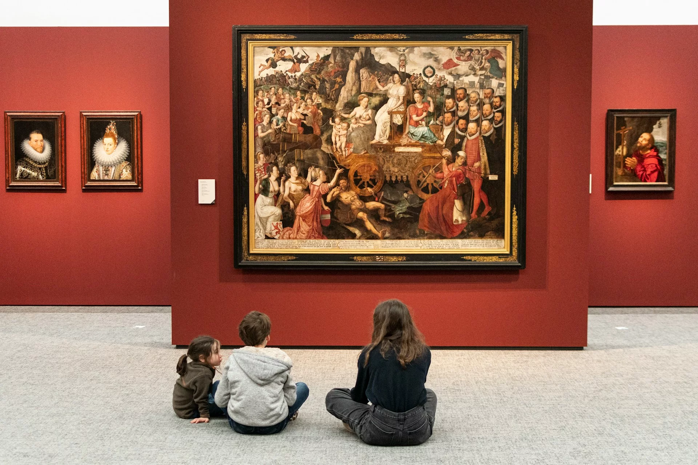
- concentration
- -
- often
- -
- interested
- -
- paintings
- -
- artist
Matematik
Optagelsesprøven i matematik består af 20 opgaver med i alt 25 delopgaver. I hver delopgave kan du opnå 1 point. Samlet set kan du altså højst opnå 25 point i matematik.
Du må bruge alle hjælpemidler, herunder bøger, noter, computer og lommeregner.
- Du kan skrive en brøkstreg ved at bruge dette tegn: / Eksempel: 1/3
- Du kan skrive et gangetegn ved at bruge dette tegn: * Eksempel: 2*6
- Du kan skrive en potens ved at bruge dette tegn: ^ Eksempel: 4^2
Matematik
Opgaver
Opgave 1
Skriv det tal, der er 10 større end 496.
Opgave 2
Beregn tallet
Opgave 3
Hvilket tal er størst?
Sæt X
|
0,8 |
0,09 |
0,10 |
0,677 |
0,75 |
Opgave 4
Hvilken af brøkerne er større end \frac{1}{2}?
Sæt X
|
\frac{2}{5} |
\frac{6}{10} |
\frac{1}{8} |
\frac{5}{11} |
\frac{49}{100} |
Opgave 5
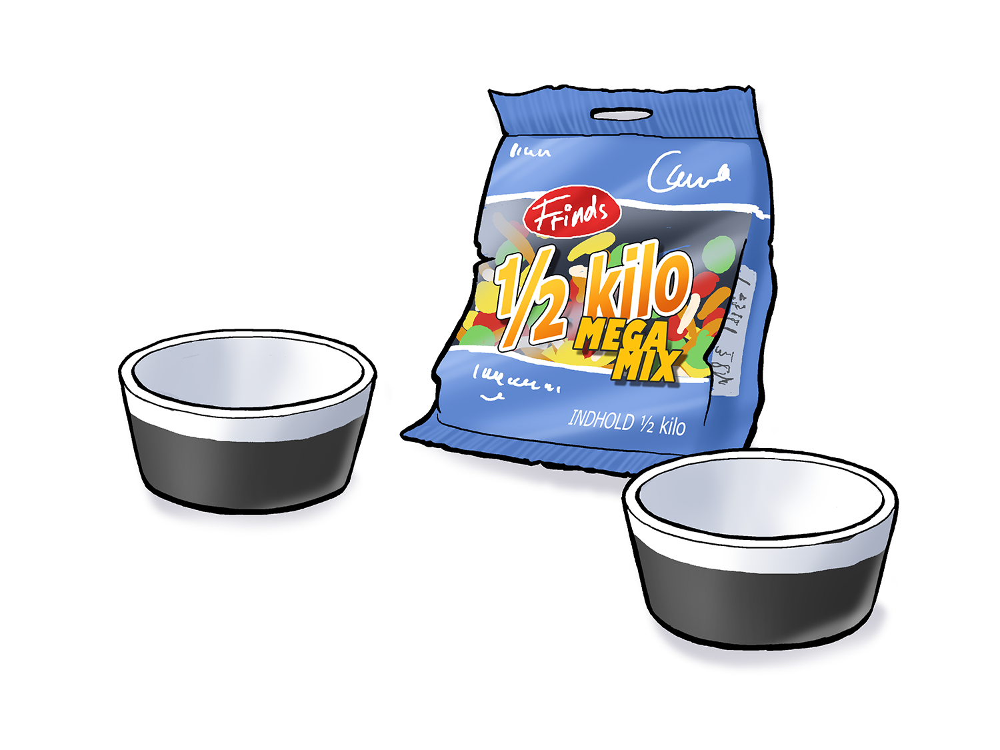
Tegning: Hans Ole Herbst2 børn skal dele ½ kg slik. Hvor meget slik får de hver, hvis de deler lige?
Opgave 6
Løs ligningen 3x + 3 = 12
Opgave 7
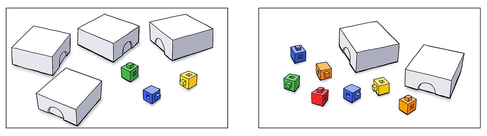
Tegning: Hans Ole HerbstPå de to tegninger er der nogle løse centicubes og nogle centicubes i æsker. Alle æskerne indeholder samme antal centicubes. Der er lige mange centicubes på tegning 1 og på tegning 2.
Hvor mange centicubes er der i hver æske?
Opgave 8
Opgave 9
Opgave 10
Opgave 11
Opgave 12
Hvilket udtryk er en korrekt omskrivning af a\cdot (a +1) ?
Sæt X
|
a^2 + a |
2a \cdot a |
1 \cdot (1+1) |
2a |
2a + a |
Opgave 13
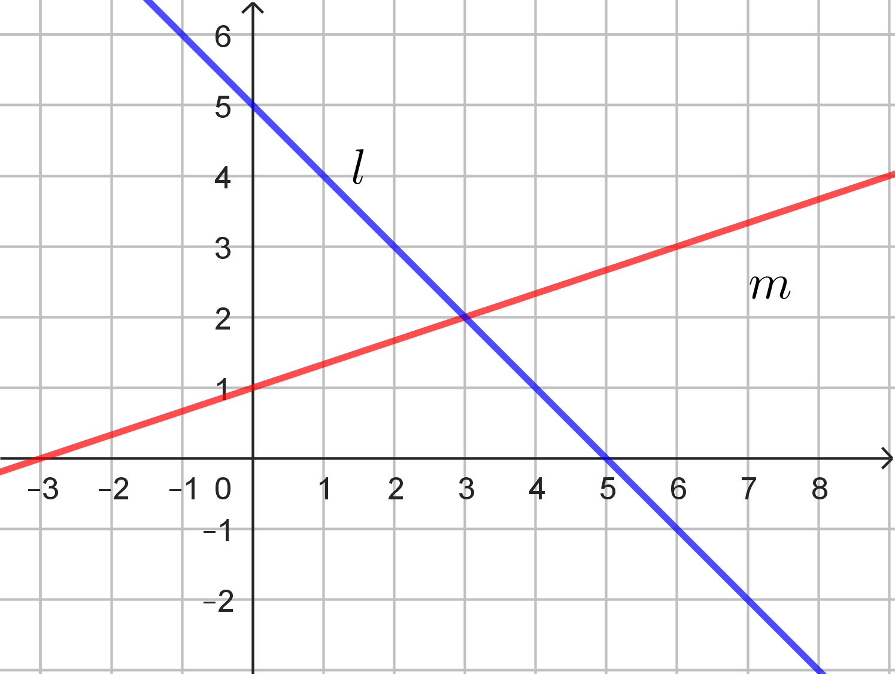
På figuren er der to rette linjer l og m.
Hvilken af følgende ligninger passer til linjen m?
Sæt X
y = 3 \cdot x + 1
y = \frac{1}{3} \cdot x + 1
y = 1 \cdot x + 3
y = 1 \cdot x + \frac{1}{3}
y = - \frac{1}{3} \cdot x + 1
Opgave 14
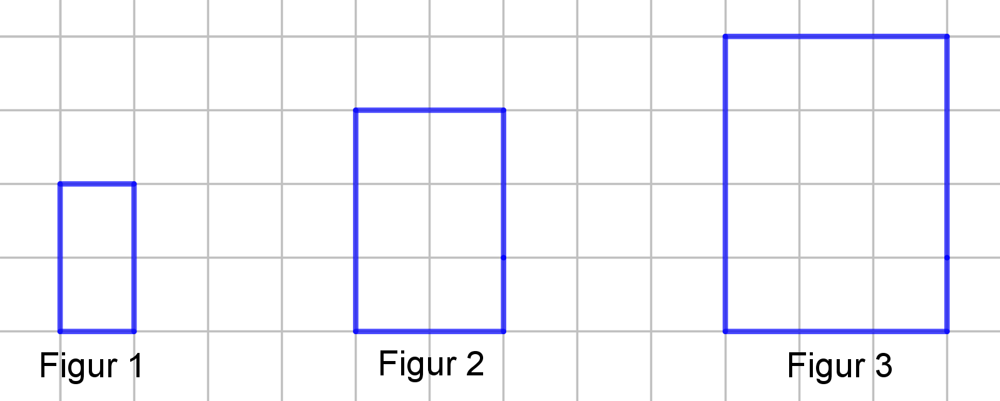
Her er de første tre figurer i en figurfølge. Figurfølgen fortsætter på samme måde,
som den er begyndt.
Figur 1 indeholder 2 tern. Figur 2 indeholder 6 tern. Figur 3 indeholder 12 tern.
Hvilket nummer har den figur, der indeholder 56 tern?
Opgave 15
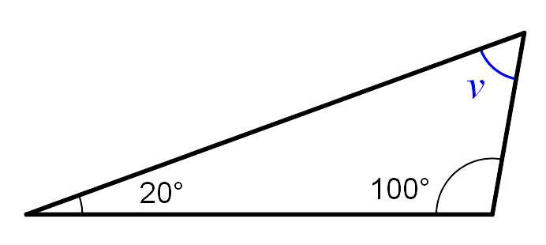
Hvor stor er vinkel v?
Opgave 16
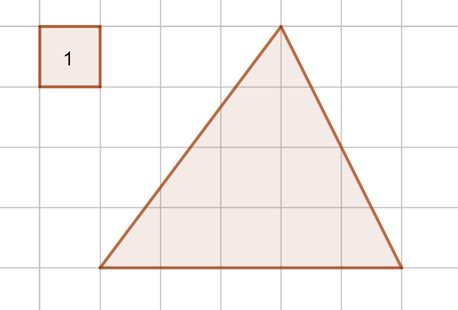
Opgave 17
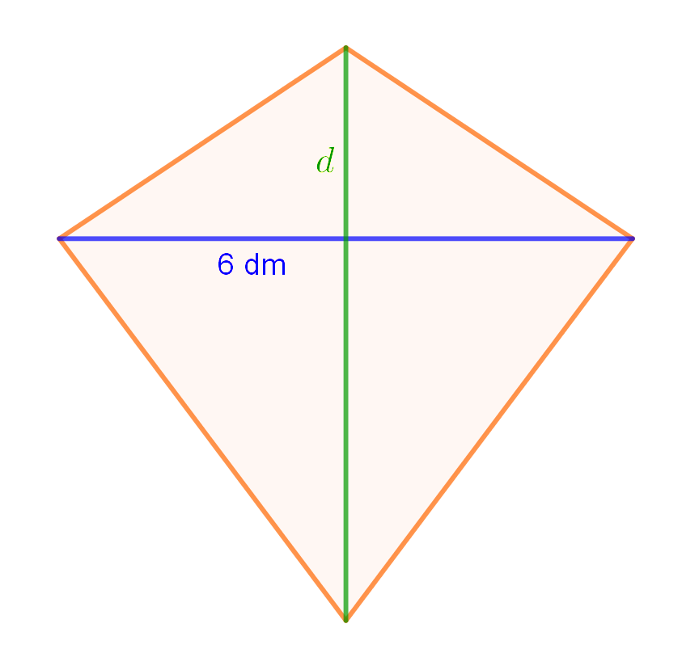
d er længden af den grønne diagonal (dm).
Skitsen viser en papir-drage, hvor den blå diagonal er 6 dm lang. Man kan beregne arealet af dragen med formlen i rammen.
Hvad er længden af den grønne diagonal, d, hvis arealet er 36 dm2?
Opgave 18
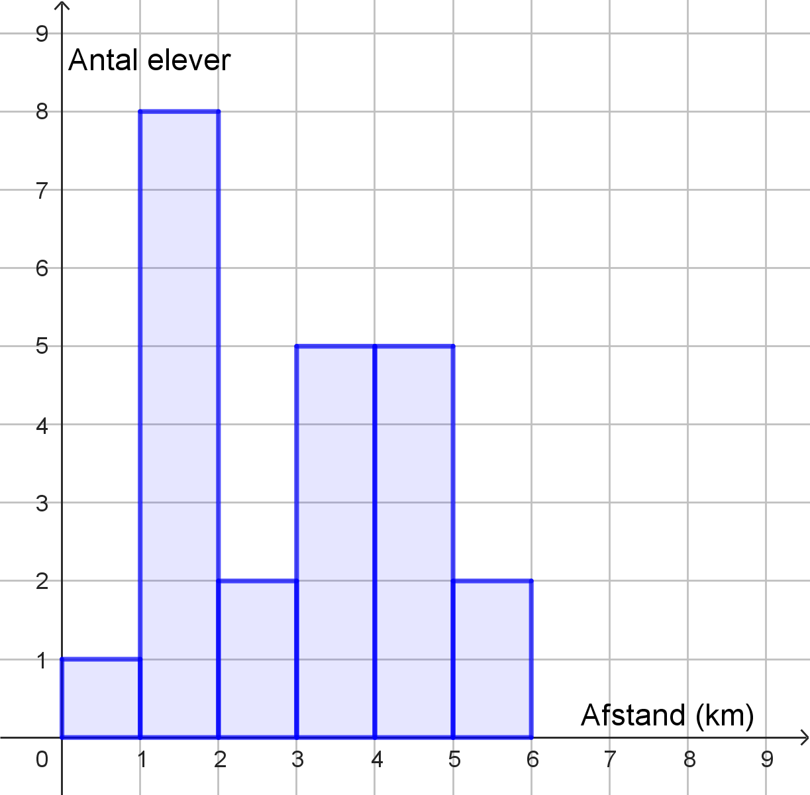
Hvor mange elever har mellem 4 og 5 km til skole?
elever
Hvor mange elever har mindre end 3 km til skole?
elever
Opgave 19
Opgave 20
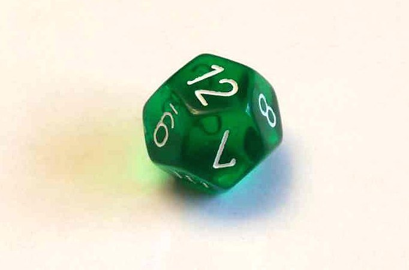
Thomas kaster med en terning, som viser et tilfældigt tal mellem 1 og 12.
Hvor stor er sandsynligheden for, at Thomas’ kast viser tallene 1,2 eller 3?
Fysik/kemi
Prøven i fysik/kemi består af 24 opgaver, og du kan opnå 1 eller 2 point i hver enkelt opgave. De 24 opgaver er fordelt på 5 områder indenfor fysik/kemi. Du kan samlet få op til 25 point.
Grundstoffernes periodesystem findes sidst i sættet.
1. Atomer og grundstoffer
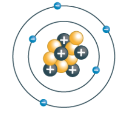
Figur 1.a: Atommodel|
3 |
5 |
7 |
9 |
11 |
13 |
Anvend grundstoffernes periodesystem til de næste 3 opgaver.
2. Lyset fra stjerner
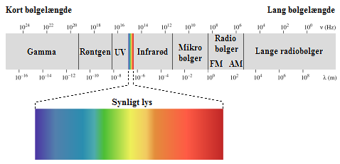
Figur 2.a: Det elektromagnetiske spektrum(Kilde: www.stjernebasen.dk)
Hvilken strålingstype har større bølgelængde end synligt lys. Anvend figur 2.a.
|
Gammastråling |
Radiobølger |
UV-stråling |
Hvilken strålingstype i det elektromagnetiske spektrum har størst energi. Anvend figur 2.a.
Eleven undrer sig over, hvorfor alle stjerner på himlen lyser næsten lige meget. Eleven laver derfor følgende opstilling i laboratoriet og indsamler følgende data. Se figur 2.b nedenunder.
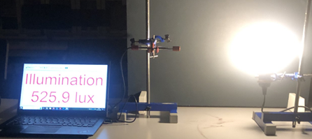
Figur 2.b: Forsøgsopstilling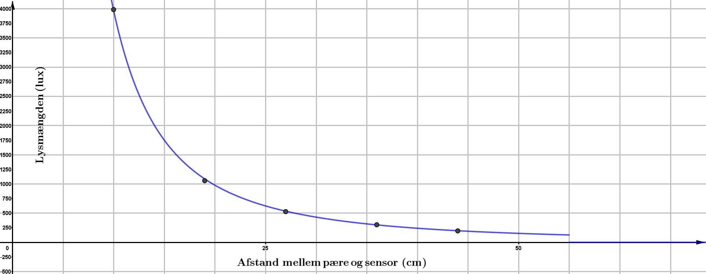
Figur 2.c: Lysmængden som funktion af afstanden til pæren.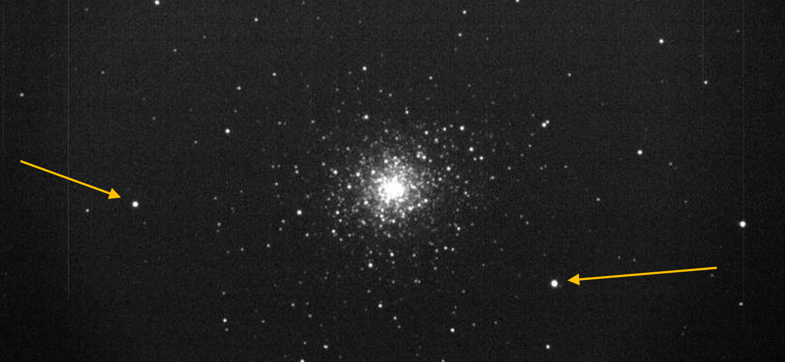
Figur 2.d: Foto af M92Forklar hvorfor du ikke kan være sikker på, at de lyser med samme intensitet (styrke). Anvend figur 2.c.
| Energiomsætning | Sæt X |
| potentiel energi → elektrisk energi | |
| kerneenergi → strålingsenergi | |
| kinetisk energi → elektrisk energi | |
| kemisk energi → strålingsenergi |
3. Spændingsrækken
Når to forskellige metaller er anbragt i en elektrisk ledende væske,
vil der gå en strøm
mellem de to metaller.
En elev vil bestemme spændingsforskellen mellem en zink-elektrode (Zn) og en
kobber-elektrode (Cu) i saltvand.
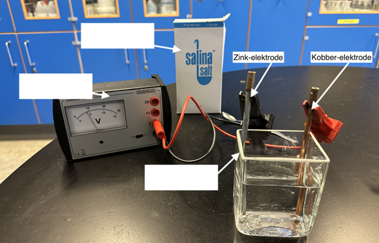
Figur 3.a: Forsøgsopstilling til at undersøge spændingsrækken.Hvilke materialer indgår i elevens forsøgsopstilling?
Skriv de korrekte
materialer i boksene. Vælg fra listen.
- Amperemeter
- Voltmeter
- Reagensglas
- Bægerglas
- Elementglas
- Natriumchlorid (NaCl)
- Sukker (C12H22O11)
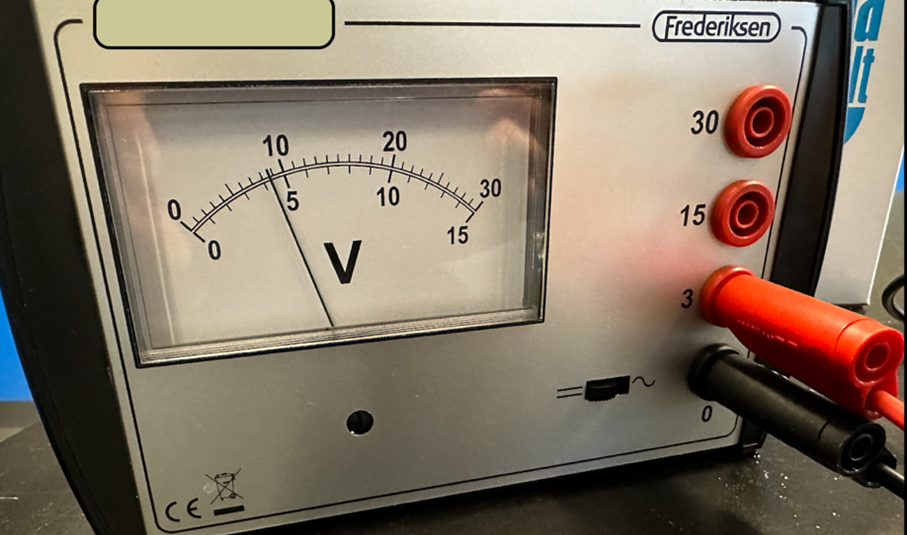
Figur 3.b: Måleapparat, der måler spændingsforskellen.|
0,9 V |
4,5 V |
9 V |
Hvilke partikler bevæger sig gennem ledningen, når der går en strøm mellem de
to metalelektroder?
Partiklerne er
|
molekyler |
atomkerner |
elektroner |
Eleverne måler også spændingsforskellen mellem kobber og andre metaller, se elevernes data i tabel 3.1.
| Kobber (Cu) | Aluminium (Al) | Bly (Pb) | Jern (Fe) | Magnesium (Mg) | |
| Kobber (Cu) | 0 V | 2,1 V | 0,47 V | 0,78 V | 2,70 V |
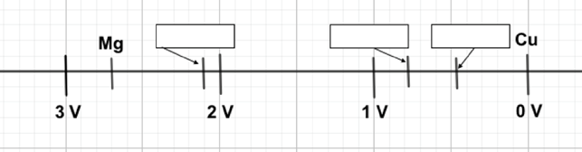
Figur 3.c. Elevernes spændingsrække4. Besøg på et landbrug
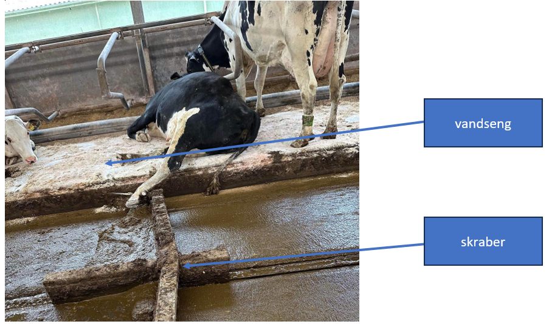
Figur 4.a: Billede af vandseng og gyllekanal med skraberHvad hedder den kraft, som en ko belaster vandsengen med?
|
kernekraften |
tyngdekraften |
centripetalkraften |
den elektriske kraft |
|
koens højde |
koens farve |
koens vægt |
koens mælkeproduktion |
Koens gylle har en markant lugt. Det skyldes blandt andet, at gyllen indeholder nitrogenforbindelser.
|
NH3 |
CH4 |
H2O |
CO2 |
Gyllen opsamles i stalden i en kanal, som tømmes ved hjælp af en skraber. Eleven noterer, hvor langt skraberen er kommet hvert 5. minut. Se figur 4.b.
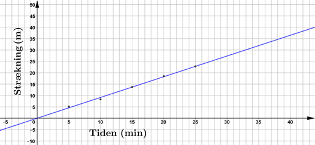
Figur 4.b: Graf som viser skraberens bevægelseDet tager 33 minutter for skaberen at køre gyllekanalen igennem.
 Figur 4.c:
Forslag til diagrammer
Figur 4.c:
Forslag til diagrammer
5. Citrusfrugter
En elev måler pH-værdien af citronsaft.
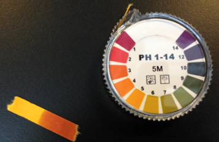
Figur 5.a: pH-måling af citronsaftBrug figur 5.a til at besvare opgave 5.1.
Hvad er citronsaftens pH-værdi?
Placer sur, basisk og neutral på de rigtige pladser på pH-skalaen figur 5.b.
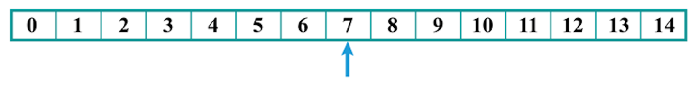
Alle citrusfrugter indeholder citronsyre (C6H8O7).
Hvor mange hydrogen-atomer indeholder citronsyre (C6H8O7)?
En elev har forskellige citrusfrugter og vil sammenligne deres syreindhold. Se figur 5.c. Eleven bruger phenolphthalein som syre-baseindikator. Indikatoren skifter fra farveløs til pink ved en pH-værdi på 8,3.
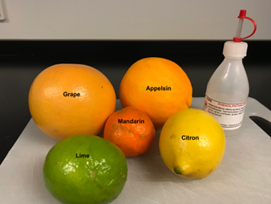
Figur 5.c: Citrusfrugter og indikator.Eleven hælder 2 mL appelsinsaft op i et reagensglas og tilsætter indikatoren. Det gentages ved alle citrusfrugterne. Se opstillingen på figur 5.d.
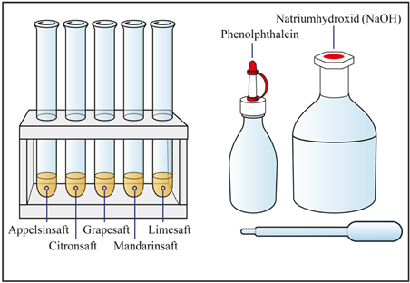
Figur 5.d: Fem reagensglas med 2 mL saft i hvert.Eleven tæller derefter, hvor mange dråber natriumhydroxid (NaOH), der skal tilsættes hvert reagensglas, inden indikatoren skifter fra farveløs til pink. Elevens data er vist i tabel 5.a.
| Citrusfrugt | Appelsinsaft | Citronsaft | Grapesaft | Mandarinsaft | Limesaft |
| Dråber natriumhydroxid | 5 | 27 | 6 | 3 | 30 |
Hvilken citrusfrugt har det laveste syreindhold?
Reagerer natriumhydroxid (NaOH), som en syre eller en base? Du skal begrunde dit svar ud fra undersøgelsen.
Oplysninger til brug for Copydan
Anvendt materiale i Dansk:
Naja Marie Aidt: Hun græder ikke.
Gyldendal.
Bavian, 2006.
Anne Ringgaard: ”Du lever i en anti-romantisk tid: Tinder og SoMe går ud over
kærligheden”.
Videnskab.dk.
Oktober, 2019.
Anvendt materiale i engelsk:
Image credit:
https://www.kinderpedia.co/educational-benefits-children-museums.html
Dette prøvesæt er omfattet af ophavsretten, jf. ophavsretslovens § 1.
Prøvesættet må alene anvendes til den på prøvesættet anførte prøve.
Al anden anvendelse af prøvesættet, herunder visning eller deling f.eks. via
internettet,
sociale medier, portaler og bøger, udgør en krænkelse af Børne- og
Undervisningsministeriets
og evt. tredjemands ophavsret og er ikke tilladt.
Overtrædelse af ophavsretten kan være erstatningspådragende og/eller strafbart.
Prøvesættet kan dog, efter at prøven er afsluttet, anvendes til undervisningsbrug på
uddannelser m.v. omfattet af den lovgivning, som Styrelsen for Undervisning og Kvalitet
administrerer.